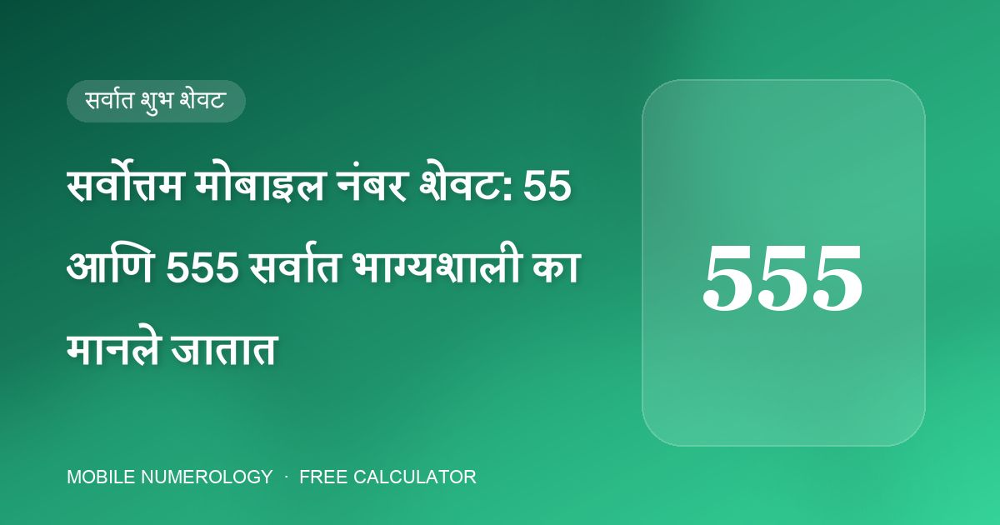

सर्वोत्तम मोबाइल नंबर शेवट: 55 आणि 555 सर्वात भाग्यशाली का मानले जातात

कोणत्याही मोबाइल न्यूमरॉलॉजिस्टला विचारा की नवीन नंबरसाठी ते कोणता शेवट निवडतील, आणि जवळजवळ नेहमी एकच उत्तर मिळेल: 55 किंवा 555. अॅडव्हान्स मोबाइल न्यूमरॉलॉजी क्लास 555 ने संपणाऱ्या नंबरला "सर्वोत्तम शेवटांपैकी एक" म्हणतो, आणि आमचा विश्लेषक त्याला सर्वाधिक पॅटर्न बोनस देतो. यामागचे तर्कशास्त्र असे आहे.
5 म्हणजे बुध — संवाद, व्यवसाय आणि स्वातंत्र्य
कॅल्डियन न्यूमरॉलॉजीमध्ये अंक 5 बुधाचा आहे — वाणी, व्यापार, चटकन विचार व अनुकूलतेचा ग्रह. फोन हे अक्षरशः संवादाचे साधन असल्याने 5 त्यासाठी सर्वात नैसर्गिक अंक मानला जातो. 5 हा एकमेव अंक आहे ज्याला सुसंगतता तक्त्यात एकही शत्रू अंक नाही — तो 1, 2, 3, 5 आणि 6 चा मित्र आहे आणि बाकीच्यांशी तटस्थ — त्यामुळे तुमचा मूलांक किंवा भाग्यांक काहीही असो, तो सुरक्षित पर्याय ठरतो.
शेवटच्या तीन स्थानांत 5 काय करतो
- आठवे स्थान (करिअर व आरोग्य): 5 करिअर यश व प्रसिद्धीला आधार देतो.
- नववे स्थान (जनसंपर्क): 5 "सर्वोत्तम" आहे — दृश्यता व नेटवर्क वाढवतो.
- दहावे स्थान (संपत्ती): पुन्हा 5 सर्वोत्तम, पैसा गतिमान ठेवतो.
55 ने संपणे दोन सर्वाधिक निकाल-केंद्रित स्थाने बुधाच्या अंकाने भरते; 555 ने संपणे तिन्ही.
5 कुठे नसावा
5 सर्वत्र चांगला नाही. पाचव्या स्थानी तो मुलांशी संबंधित समस्यांशी जोडलेला आहे, आणि सहाव्या किंवा सातव्या स्थानी वैवाहिक समस्यांशी, कारण बुधाची चंचल ऊर्जा कुटुंब क्षेत्र अस्थिर करते. म्हणून आदर्श पॅटर्न म्हणजे शेवटच्या अंकांत 5 आणि मध्ये काहीतरी शांत, जसे 6.
555 मिळाला नाही तर?
555 ने संपणारे नंबर VIP नंबर म्हणून विकले जातात आणि महाग असू शकतात. पसंतीच्या क्रमाने चांगले पर्याय:
- 55 ने संपणारा — जवळजवळ तितकाच मजबूत.
- 6 ने संपणारा — पैशासाठी उत्कृष्ट, शुक्र-मित्र लोकांसाठी (मूलांक 1, 5, 6, 7) आदर्श.
- नवव्या–दहाव्या स्थानी 3 किंवा 7 — संधी, आत्मविश्वास व आध्यात्मिक लाभ.
- ऊर्जा व सार्वजनिक प्रतिष्ठेसाठी आठव्या किंवा नवव्या स्थानी 9.
कोणताही शेवट निवडा, नंबरची एक-अंकी बेरीज तुमच्या मूलांक व भाग्यांकाची मित्र आहे का ते तपासा — उत्तम शेवटही शत्रू बेरीज पूर्णपणे वाचवू शकत नाही.
30 सेकंदांत तुमचा नंबर तपासा
आमचा मोफत कॅल्क्युलेटर तुमच्या मोबाइल नंबरची सर्व 10 स्थाने तपासतो, तुमचा मूलांक व भाग्यांक काढतो आणि शुभ पिन, पासवर्ड, वॉलपेपर व कव्हर सुचवतो — तुम्ही जे टाकता ते तुमच्या ब्राउझरबाहेर जात नाही.
वारंवार विचारले जाणारे प्रश्न
5555 शेवट 555 पेक्षाही चांगला आहे का?
आवश्यक नाही. लाभ 5 आठव्या, नवव्या व दहाव्या स्थानी असण्याने मिळतो. सातव्या स्थानी (वैवाहिक जीवन) 5 वैवाहिक तणाव निर्माण करू शकतो, त्यामुळे 555 हाच योग्य समतोल आहे.
55 ने संपणारा नंबर व्यवसायासाठी चांगला आहे का?
5 म्हणजे बुध, व्यापार व संवादाचा ग्रह, त्यामुळे शेवटी 55 व्यवसाय मालक, विक्रेते व सल्लागारांसाठी सर्वाधिक शिफारस केलेल्या शेवटांपैकी एक आहे.
माझा नंबर 55 ने संपतो पण बेरीज 8 आहे — तरी शुभ आहे का?
शेवट मदत करतो, पण बेरीज 8 मूलांक 1, 2, 4, 8 व 9 साठी शत्रू अंक आहे. तुमच्या जन्मतारखेसाठी निव्वळ परिणाम पाहण्यासाठी पूर्ण विश्लेषण चालवा.